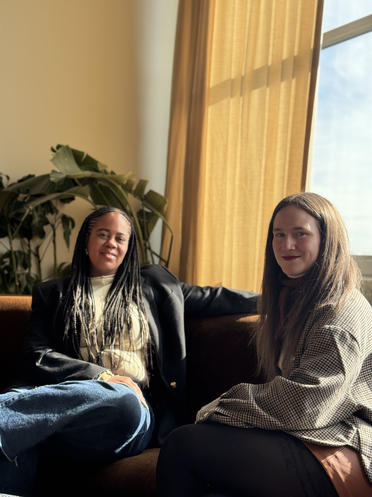

Laurent Turcot
A Quebec-NYC historical collaboration connecting culture, history, and place for a broad audience.
Founder Project
I built Quebec Meets NYC as a bilingual storytelling and community platform for Quebecers, francophones, and allies in New York.

What started as a storytelling project became a growing network for cultural connection, visibility, and community in New York.
I created Quebec Meets NYC to highlight people, businesses, institutions, and ideas that show how Quebec lives beyond its borders.
The project blends short-form video, interviews, event coverage, partnerships, and bilingual community storytelling.
Impact
Community members and followers across platforms.
Total reach through social content and community storytelling.
Interviews with Quebecers living and working in New York.
Community Storytelling
I started by sharing stories of Quebecers living in New York. The content quickly became a way for people to recognize themselves, discover each other, and build real relationships offline.
Selected Collaborations
A Quebec-NYC historical collaboration connecting culture, history, and place for a broad audience.
Alumni storytelling content highlighting Quebec talent and professional journeys in New York.
Community events and creator collaborations supporting the French-speaking community in NYC.
My Role